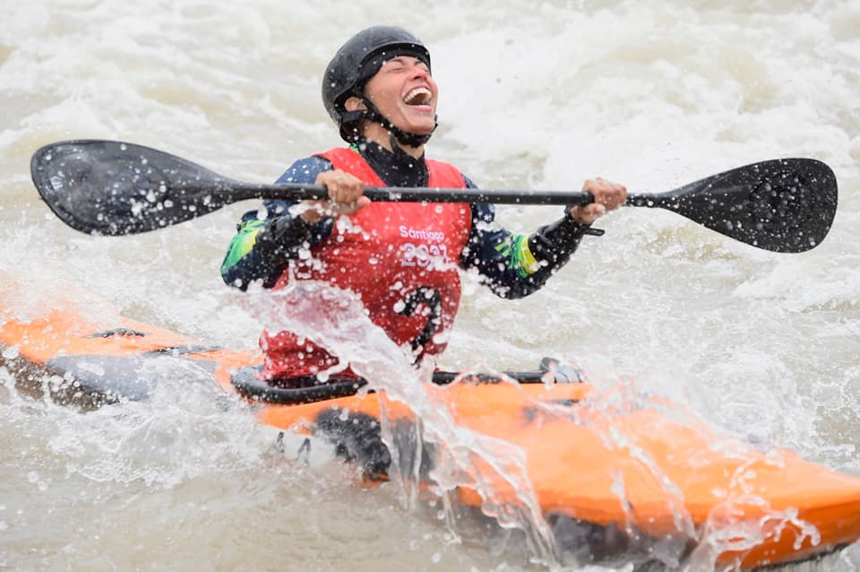

Our Passion and Commitment
At White Water Rafting Company, we are passionate about providing thrilling and unforgettable rafting experiences. Our team of experienced guides is dedicated to ensuring your safety and enjoyment on the water.

At White Water Rafting Company, we are passionate about providing thrilling and unforgettable rafting experiences. Our team of experienced guides is dedicated to ensuring your safety and enjoyment on the water.
Connecting families and friends through outdoor activities in Lunahuaná through guided adventures conducted with integrity, professionalism, and enthusiasm. Be part of the moments where unforgettable memories are created.
Our journey began years ago with a simple passion for the river. What started as a small group of friends exploring local rapids has grown into a premier rafting outfitter. We believe in sharing the power and beauty of the river with others, and this belief has led us to a successful business. Our company has evolved from a family passion to a world-class whitewater experience, successfully guiding thousands of people down some of the most exciting rivers in the country, creating lasting memories and forging a community of fellow river enthusiasts. Our history is a testament to our dedication to the sport and the people who love it.